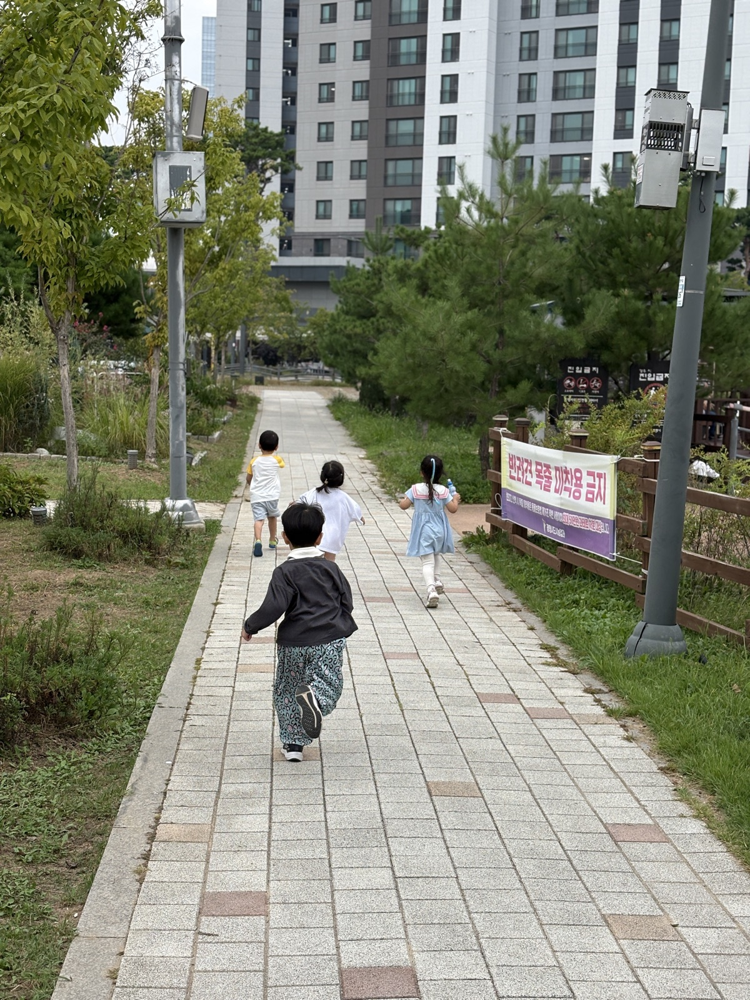

photo_camera

당일치기
2026.11.15
(예시) 동네 숲길 반나절 산책 코스
📍 경기 광명 · 👶 3~7세 · ⏱ 약 3시간
여기에 이 여행을 한두 줄로 소개해 주세요. 목록에서 가장 먼저 보이는 문장이에요.
- 🍼 수유실 있음
- 🛒 유모차 OK
- 🅿️ 무료 주차
여행 기록 펼쳐보기 expand_more
- 10:00 출발 — 어디서 어떻게 갔는지
- 11:00 첫 번째 장소 — 아이 반응, 머문 시간
- 12:30 점심 — 아기 의자·키즈메뉴 여부
- 14:00 마무리 — 낮잠 타이밍
엄마의 꿀팁
가기 전에 알았으면 좋았을 것, 챙겨가면 좋은 준비물을 적어 주세요.